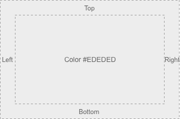
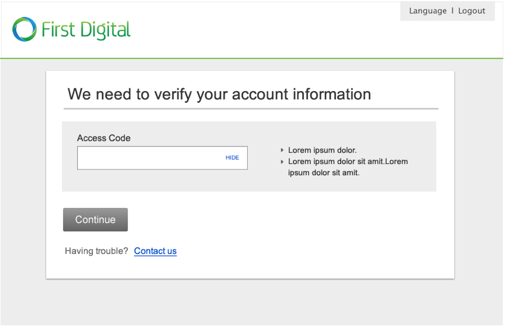
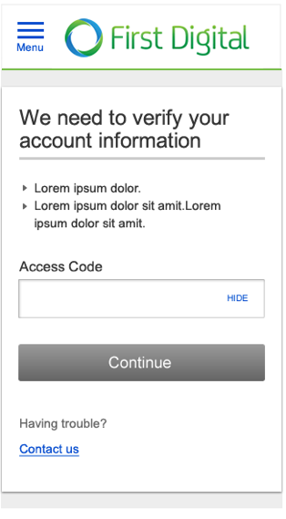
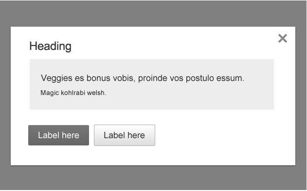
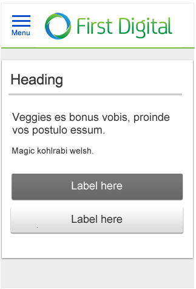

Callout
Visual Specifications
Callouts are used inside the containers at L, M, S in order to group content together. At the XS screen size the callout is removed in order to save horizontal space. However, there are instances where a callout may still be needed at XS in order to group critical information together. For example, complex forms sometimes require a callout to persist at XS in order to help the user understand the page hierarchy.

| Screen size | Padding (Top, Right, Bottom, Left) from the edge of the container to the content. |
|---|---|
| Large | 30px, 30px, 30px, 30px |
| Medium | 30px, 30px, 30px, 30px |
| Small | 20px, 20px, 20px, 20px |
| XSmall | 20px, 20px, 20px, 20px *if there is a callout on XS (not default behavior) |
Examples
Simple form
L, M, S

XS

Overlay
L, M, S

XS

Callout
This is test Callout; behave normally for all break points
This is test Callout; behave normally for all break points except XS.
- xs-void: will omit padding and background color for XS breakpoint.
<div class="di-callout {xs-void}">
This is test Callout; behave normally for all break points except XS.
</div>